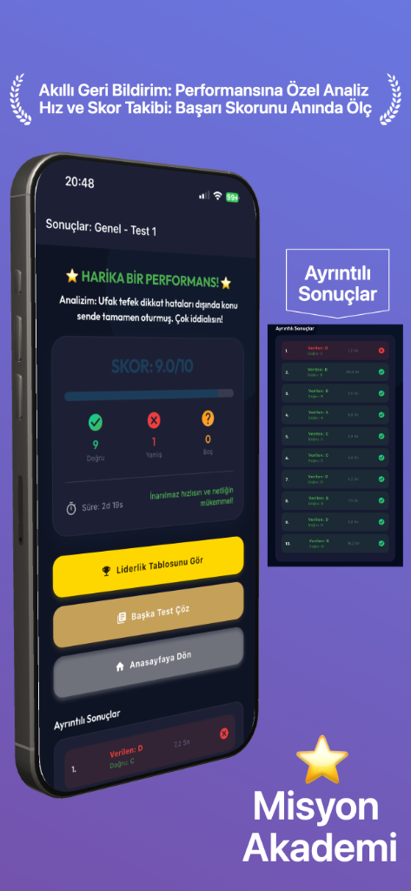
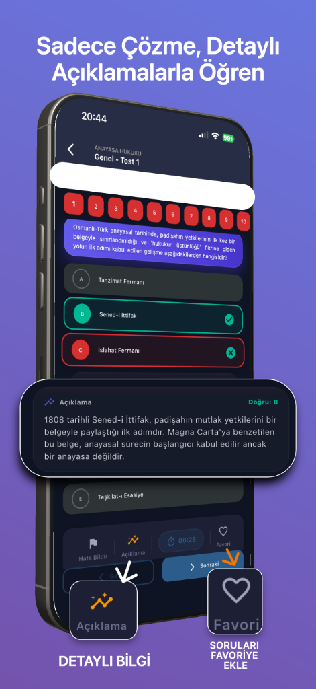
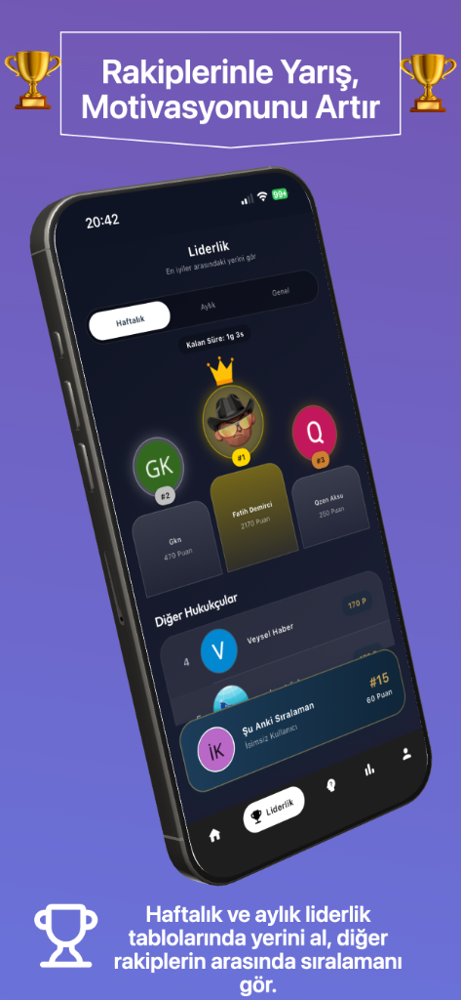
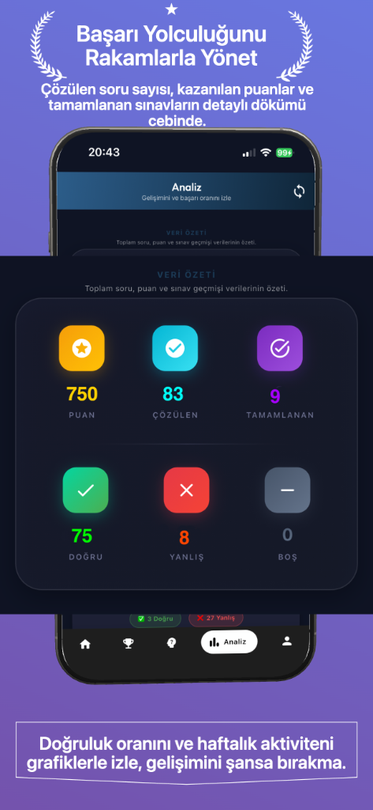
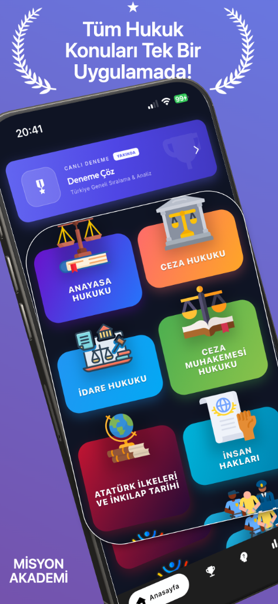

Güven Öncelikli Açılış
Hazırlığı dağınık bir süreçten çıkar, disiplinli bir çalışma sistemine dönüştür.
Misyon Akademi; güncel hukuk testleri, konu bazlı premium akış, yanlış soru tekrar alanı, sınav geçmişi ve net performans analizi ile her gün ne çalışacağını daha hızlı görmeni sağlar.
Premium planları karşılaştır
Ücretsiz başlangıç ve hızlı kurulum
iPhone ve Android'de yayında





Güven ve Otorite
Hazırlığa başlamak için önce daha net bir çalışma düzeni gerekir.
Dağınık Süreç
- Nereden başlanacağı net değildir.
- Yanlış sorular kısa sürede kaybolur.
- Çalışma günü plansız ilerler.
- Gelişim hissi ölçülemez kalır.
Misyon Sistemi
- Genel testlerle anında giriş yapılır.
- Premium akışla konu konu derinleşilir.
- Yanlış soru alanı tekrar düzenini korur.
- Analiz ekranı ilerlemeyi somutlaştırır.
İlk gün boş ekran hissi yok
Kullanıcı uygulamayı açtığı anda ne yapacağını düşünmek yerine doğrudan çalışmaya başlayabilir.
Konu konu ilerleme hissi güçlü
İçerik akışı rastgele değil; daha güven veren, daha düzenli bir çalışma sırası sunar.
Performans görünür kalır
Doğru, yanlış, boş ve süre metrikleri çalışmanın kalitesini daha okunur hale getirir.
Tekrar kararını sistem verir
Eksikler unutulmasın diye yanlış soru alanı sürekli görünür bir çalışma hafızası gibi çalışır.
Anlatı Odaklı Akış
Başla, derinleş, tekrar et. Bütün sistem bu kadar net.
Sayfa akışı hero + güven + sistem anlatısı üzerine kuruldu. Bu yüzden ziyaretçi tek bir vaat değil, tutarlı ve uygulanabilir bir çalışma yöntemi görüyor.
Hızlı başlangıç
Genel testler sayesinde kullanıcı birkaç saniye içinde sisteme girer.
Konu derinliği
Premium testler ile eksik alanlar daha kontrollü şekilde kapanır.
Analiz ve tekrar
Yeni gün planı, hisle değil sonuçlarla şekillenir.
Ürün Vitrini
Ürünü yalnızca anlatmayan, doğrudan gösteren bir vitrin kurgusu.
Gerçek ekran görüntüleri, sayfaya güven kazandırır. Bu yüzden ana tanıtım alanında sonuç ekranı, konu akışı ve analiz görünümünü birlikte gösteriyoruz.
- Gerçek ürün ekranlarıyla daha hızlı güven oluşur.
- Mobil kullanım hissi masaüstünde de net şekilde aktarılır.
- CTA’lar ürün anlatısının içine doğal olarak yerleşir.
Örnek Kullanıcı Yorumları
Mağaza yorumları arttıkça bu alan gerçek kullanıcı yorumlarıyla güncellenecek.
Bu alanda, kullanıcıların uygulamayla ilgili öne çıkardığı güçlü yönleri yansıtan örnek yorumlar yer alıyor.
Murat K.
★★★★★
“Ne çözeceğimi aramak yerine doğrudan teste girebiliyorum. En çok zaman kazandıran kısım bu oldu.”
Hızlı başlangıç odağı
Ayşe T.
★★★★★
“Yanlış soru alanı sayesinde eksiklerim kaybolmuyor. Tekrar düzeni çok daha kontrollü hale geldi.”
Tekrar düzeni odağı
Hasan Y.
★★★★★
“Analiz ekranı sade ve anlaşılır. Çalışma sonrası gelişimi net şekilde görebiliyorum.”
İlerleme hissi odağı
Zeynep A.
★★★★★
“Konu konu ilerleme mantığı güzel kurulmuş. Çalışırken dağılmadığım için uygulamayı daha sık açıyorum.”
Konu bazlı akış
Emre B.
★★★★★
“Testler ve istatistikler aynı yerde olunca neye ağırlık vermem gerektiği daha net belli oluyor.”
Net analiz deneyimi
Fatma D.
★★★★★
“Arayüz sade olduğu için dikkat dağıtmıyor. Özellikle soru çözme ve sonuç ekranları çok temiz.”
Sade arayüz
Ahmet C.
★★★★★
“Premium kısmın konu bazlı açılması güzel. Ne için ödeme yaptığımı açıkça gördüğüm bir yapı var.”
Premium netliği
Selin G.
★★★★★
“Deneme sonrası süre takibi çok işe yaradı. Hangi konuda yavaş kaldığımı fark etmek kolaylaştı.”
Süre takibi
Okan P.
★★★★★
“Çalışma düzenini oturtmak isteyen biri için güzel düşünülmüş. Uygulama ne yapacağını gösterdiği için motivasyon kaybı azalıyor.”
Rutin oluşturma
Elif N.
★★★★★
“Yanlışların tekrar çözülmesi ve performansın görünmesi birlikte olunca uygulama daha profesyonel hissettiriyor.”
Profesyonel deneyimSık Sorulan Sorular
Karar vermeden önce en sık merak edilen başlıkları burada topladık.
Uygulama hangi sınavlar için uygun?
Komiser Yardımcılığı ve Misyon Koruma sınavları başta olmak üzere, hukuk temelli hazırlık süreçleri için optimize edilmiştir.
Premium erişim neleri kapsıyor?
Konu bazlı test akışları, gelişmiş analizler, yanlış soru tekrar alanı ve daha derin çalışma ekranlarına tam erişim sağlar.
İçerikler düzenli olarak güncelleniyor mu?
Mevzuat ve sınav düzeni takip edilerek içerikler düzenli aralıklarla yenilenir; kullanıcı yeni test ve duyurulara uygulama içinden ulaşır.
Aboneliğimi dilediğim zaman iptal edebilir miyim?
Evet. App Store veya Google Play hesap ayarlarından abonelik her zaman yönetilebilir ve iptal edilebilir.
Hızlı Destek
Herhangi bir sorunda tek mesaj uzağındayız.
Uygulama, üyelik veya içerik hakkında destek almak için Telegram kanalımızdan doğrudan bize ulaşabilirsin.
Telegram'a GitTopluluk
Sosyal Kanallar
Yasal Bilgiler